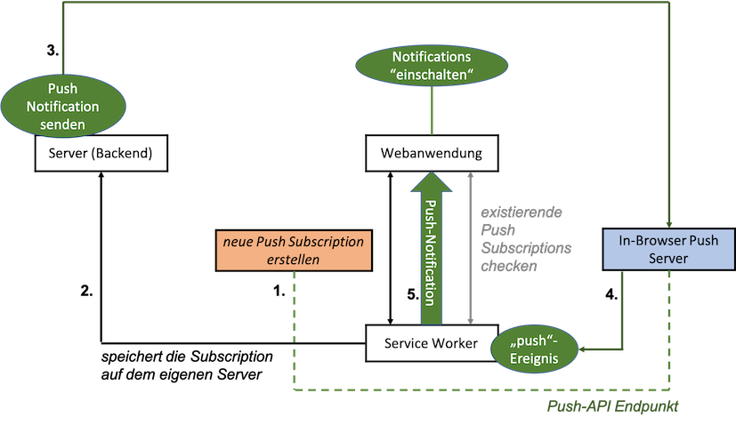
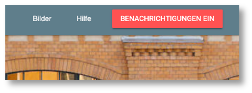
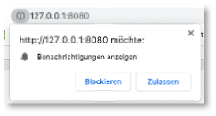
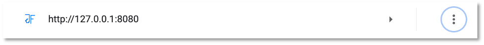
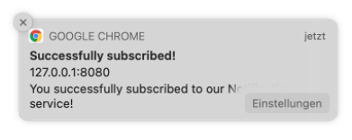
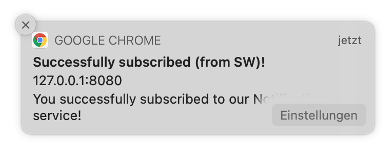
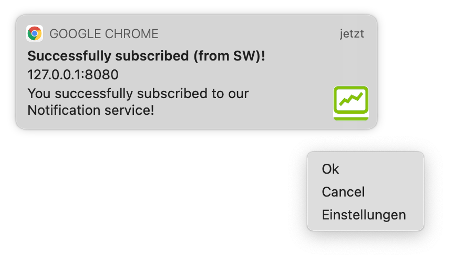
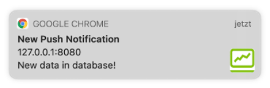

Push Notifications¶
Hint
Aktueller Stand vor Push Notifications:
- Frontend
- Backend
- Collection post
- Collection post.files
- Collection post.chunks
Push Notifications sind sinnvoll, um die Nutzerin einer App über Neuigkeiten zu informieren, sogar dann, wenn die Anwendung (und der Browser!) geschlossen ist (sind). Mit Push Notifications können Nutzerinnen wieder "zurück an die App geholt" werden, d.h. mithilfe von Push Notifications kann man dafür sorgen, dass Nutzerinnen die App wieder öffnen, um sich die Neuigkeiten genauer anzuschauen. Die Neuigkeiten können neue Tweets, E-Mails, Nachrichten, Anrufe usw. sein.
Das Prinzip, das für die Push-Benachrichtungen umgesetzt wird, sieht auf den ersten Blick etwas kompliziert aus:

Im Zentrum stehen zunächst die Webanwendung und der Service Worker. Die Webanwendung meldet sich bei den Push-Benachrichtigungen an und der Service Worker verwaltet diese. Jeder Browser hat eine eigenen "eingebauten" Push Server. Eine Push-Anmeldung (Push Subscription) erlaubt den Zugriff auf einen Push-API-Endpunkt auf den Push-Server. Die eigentliche Push-Benachrichtigung kommt jedoch vom eigenen Server. Er sendet die Push-Nachricht an den In-Browser Push Server, dieser löst damit ein push-Ereignis beim Service Worker aus und der Service Worker schickt die Push-Benachrichtigung an die Webanwendung. Wir schauen uns im Folgenden alle diese Schritte im Detail an.
Anzeigen von Benachrichtigungen¶
Wir beginnen mit dem Anzeigen (der Darstellung) von Push-Benachrichtigungen in einer Webanwendung. Dieser Abschnitt hat noch nichts mit dem push-Ereignis zu tun! Wir benötigen zum Anzeigen nicht mal einen Service Worker. Es geht aber auch über den Service Worker - und das wird später auch bei der Verwendung der Push-API notwendig. Die hier verwendete Notification-API wird von fast allen Browsern unterstützt. Hier ist auch eine gute Übersicht darüber, wie diese Notification-API verwendet wird.
Benachrichtigungen einschalten¶
Bevor wir das Anzeigen von (Push-)Benachrichtigungen betrachten, müssen wir diese zuerst erlauben. In unserer Anwendung gibt es dazu den Button BENACHRICHTIGUNGEN EIN.

In der index.html ist dieser Button zwei Mal definiert, einmal für einen schmalen Viewport und einmal für einen breiten. Für beide Varianten sieht die Implementierung so aus:
<div class="drawer-option">
<button class="enable-notifications mdl-button mdl-js-button mdl-button--raised mdl-button--colored mdl-color--accent">
Benachrichtigungen Ein
</button>
</div>
Für einen schmalen Viewport ist der Button dann unter dem Hamburger Menü in der linken oberen Ecke erreichbar. Beiden Buttons ist die CSS-Klasse enable-notifications zugewiesen. Wir sorgen zuerst dafür, dass dieser Button nur angezeigt wird, wenn der Browser die Notification-API unterstützt. Wenn nicht, dann wäre der Button funktionslos und wir bräuchten ihn nicht. Wir schalten ihn deshalb in der app.css zunächst im Standartwert aus:
1 2 3 4 5 6 7 8 9 10 11 | |
In der app.js prüfen wir, ob der Browser die Notification-API unterstützt und schalten für diesen Fall die Buttons wieder ein.
1 2 3 4 5 6 7 8 9 10 11 12 13 14 15 16 17 18 19 20 21 22 23 24 25 26 27 28 29 30 | |
- In Zeile
1erstellen wir uns eine VariableenableNotificationsButtons, die auf ein Array aller Buttons mit der CSS-Klasseenable-notificationszeigt. - In Zeile
25prüfen wir nun, ob der Browser dieNotification-API unterstützt. Wenn ja, dann schalten wir alle Buttons aus demenableNotificationsButtons-Array wieder auf sichtbar (vondisplay: noneaufdisplay: inline-block) und wir melden jeden dieser Buttons an die Ereignisbehandlung desclick-Ereignisses an (Zeile28). - Die Behandlung des
click-Ereignisses erfolgt in der MethodeaskForNotificationPermission(), die in den Zeilen14-23definiert ist. Da diese Methode nur dann aufgerufen wird, wenn der Browser dieNotification-API unterstützt, kann diese API darin verwendet werden. - Mit der Funktion requestPermission() wird die Nutzerin gefragt, ob sie Benachrichtigungen zulassen möchte. Diese Methode gibt ein Promise zurück, dessen
resultdie Wertegranted,deniedoderdefaulthaben kann. Werden Benachrichtigungen nicht erlaubt (Zeile17), können wir nichts weiter tun. Die Nutzerin wird dann auch nicht erneut gefragt. Die Benachrichtigungen bleiben für die Webanwendung ausgeschaltet (Zeile18).
Wenn wir die Anwendung nun ausführen (Reload nach Application --> Storage --> Clear Storage oder die Versionsnummern der Caches im Service Worker ändern), dann erhalten wir nach dem Klicken auf den BENACHRICHTIGUNGEN EIN-Button folgende Abfrage:

Wenn wir auf Zulassen klicken, dann erscheint in der Konsole User Chaice granted (Zeile 16). Beachten Sie, dass Sie nicht erneut gefragt werden, ob Benachrichtungen zugelassen werden sollen oder nicht. Erneutes Klicken auf den Button bewirkt (selbst nach einem Reload der Anwendung) keine erneute Abfrage. Deshalb wäre es eigentlich auch sinnvoll, den Button wieder zu verstecken, d.h. auf display: none zu setzen.
Um die Benachrichtigungen zu verwalten, können Sie in Chrome chrome://settings/content/notifications eingeben. Dort sehen Sie eine Auflistung aller Webanwendungen, die Sie besucht haben und die von Ihnen eine Erlaubnis zur Benachrichtung gewollt haben. Sie können dort die jeweiligen Einstellungen wieder änder, z.B. auch für die hier entwickelte Anwendung.

Benachrichtigungen anzeigen¶
Jetzt erstellen wir unsere erste Benachrichtigung mithilfe der Notification-API. Die einfachste Form der Notification wird durch die Verwendung des parametrisierten Konstruktors von Notification (new Notification('Nachricht')) erstellt. Wir fügen die app.js eine solche einfache Benachrichtigung für den Fall, dass Benachrichtigungen erlaubt werden, ein:
1 2 3 4 5 6 7 8 9 10 11 12 13 14 15 16 17 18 19 20 21 22 23 24 25 26 27 28 29 30 31 32 33 34 | |
Wenn wir die Anwendung nun erneut ausführen und auf den Button klicken, dann werden wir zwar nicht erneut gefragt, ob wir Benachrichtigungen zulassen oder blockieren wollen, aber da wir Benachrichtungen bereits zugelassen haben, erscheint nun die folgende Benachrichtigung:

Der einfache Aufruf des Notification-Konstruktors mit einer einfachen Nachricht (Zeile 15) erzeugt auch die einfachste Form der Benachrichtigung. Dem Konstruktor lassen sich aber als zweiten Parameter noch JavaScript-Objekt für options übergeben. Darin kann ein weiterer Text (body) definiert werden und z.B. auch ein eigenes icon. Wir betrachten das später noch etwas genauer, erstmal nur eine weitere Nachricht:
14 15 16 17 | |
ergibt dann die Benachrichtigung:

Benachrichtigungen im Service Worker erstellen¶
Im jetzigen Stand werden die Benachrichtungen aus der Webanwendung heraus erstellt. Das ist auch völlig ok. Die Notification-API lässt sich sowohl in der Webanwendung verwenden, als auch im Service Worker. Da später aber die Push-Benachrichtigungen vom Service Worker verwaltet werden, wechseln wir jetzt auch für die einfachen Benachrichtigungen zum Service Worker, d.h. wir lassen die Benachrichtigungen nun nicht mehr durch die Webanwendung erstellen, sondern durch den Service Worker. Dazu passen wir unsere app.js wie folgt an:
14 15 16 17 18 19 20 21 22 23 | |
Der Service Worker besitzt eine eigene Funktion showNotification(), die intern ein Notification-Objekt erzeugt und der die gleiche Parameterliste übergeben werden kann, wie dem Notification-Konstruktor. Nach Reload und Klicken des Buttons sehen wir nun folgende Benachrichtigung:

Die Nachricht wurde extra um (from SW) ergänzt, um kenntlich zu machen, dass die Benachrichtigung nun vom Service Worker angestoßen wird.
Weitere Optionen für die Benachrichtigungen¶
Benachrichtigungen sind ein System-Feature, d.h. ihre Gestaltung hat etwas mit dem Gerät zu tun, in dem diese Benachrichtigungen erscheinen. Es ist kein Browser-Feature. Benachrichtigungen sehen auf dem Mac anders aus, als unter Windows oder unter Linux und auf dem iPhone anders, als auf einem Android-Gerät. Es gibt ziemlich viele mögliche Optionen für eine solche Benachrichtigung, aber die unterschiedlichen Systeme beachten diese Optionen mal mehr und mal weniger.
Wir werden hier der Vollständigkeit halber einige Optionen benennen, aber am meisten sieht man von diesen Optionen auf einem Android-Gerät.
14 15 16 17 18 19 20 21 22 23 24 25 26 27 28 29 30 31 32 33 34 35 36 | |
Auf dem Mac hat neben der icon-Option nur noch die actions-Option eine Auswirkung. Die Benachrichtigung sieht nun so aus (auf dem Mac):

Man sieht das icon und unter dem Icon wird durch das Hovern mit der Maus ein Menü sichtbar, das die definierten actions enthält.
- mit
imagekann die gesamte Benachrichtigung mit einem Bild unterlegt werden (sieht man bei Android), - mit
vibratekann die Benachrichtigung durch das Vibrieren des Gerätes signalisiert werden. In unserem Beispiel vibriert das Gerät 100 Millisekunden, dann ist 50 Millisekunden Pause und dann vibriert es nochmal für 200 Millisekunden. - mit
tagkönnen Benachrichtigungen mit einer Artidversehen werden. Wenn meherere Benachrichtigungen mit demselbentagvorliegen, dann wird nur die zuletzt eingegangene Benachrichtigung angezeigt. Ansonsten erscheinen alle Benachrichtigungen untereinander. renotifygehört zutag. Wenn der Wert true ist, dann wird die Nutzerin auch dann informiert, wenn eine neue Nachricht zum selbentagangekommen ist. Sonst nicht.
Eine Übersicht über alle Optionen findet sich hier.
Wenn Sie ein Android-Gerät besitzen, dann können Sie es an den Rechner andocken (USB-Anschluss - dazu müssen Sie den USB-Zugriff erlauben) und in den Devloper Tools rechts oben unter den drei senkrechten Punkten den Menüpunkt More tools und dort Remote devices auswählen und können dann ausprobieren, wie die Benachrichtigungen unter einem Android-Gerät aussehen. Anleitung für Edge, Anleitung für Chrome, Anleitung für Firefox.
Auf die unter actions definierten Aktionen kann innerhalb des Service Workers sogar reagiert werden:
140 141 142 143 144 145 146 147 148 149 150 151 152 | |
Der Service Worker kann das notificationclick-Ereignis behandeln. Ebenso kann der Service Worker das Ereignis behandeln, das ausgelöst wird, wenn eine Benachrichtigung geschlossen wird:
155 156 157 | |
Wir wollen uns aber mit den Benachrichtigungen gar nicht weiter im Detail beschäftigen, sondern lieber mit Push-Notationen. Kenntnisse über Benachrichtigungen sind aber eine gute Voraussetzung, um zu den Push-Notifikationen überzugehen.
Push-Benachrichtigungen¶
Das Konzept der Benachrichtigung wird auch bei den Push-Nachrichten verwendet. Um Push-Nachrichten zu empfangen, muss man sich jedoch zunächst für den Empfang registrieren (siehe in der Abbildung oben neue Push Subscription erstellen).
Anmelden an Push-Nachrichten (Subscription)¶
Die Anmeldung an die Push-Nachrichten geschieht in der Webanwendung. Wir passen dazu unsere app.js an und fügen eine Funktion configurePushSubscription() ein.
1 2 3 4 5 6 7 8 9 10 11 12 13 14 15 16 17 18 19 20 21 22 23 24 25 26 27 28 29 30 31 32 33 34 35 36 37 38 39 40 41 42 43 44 45 46 47 48 49 50 51 52 53 54 55 56 57 58 59 60 61 62 63 64 65 66 67 68 69 70 71 72 73 | |
Die Methode configurePushSubscription() wird nun anstelle von displayConfirmNotifivcation() in der askForNotificationPermission() aufgerufen (Zeilen 62-63). Das liegt daran, dass die Notification.requestPermission()-Funktion auch für die Erlaubnis von Push-Nachrichten verwendet wird. Mit der Erlaubnis von Benachrichtigungen wird also auch gleichzeitig die Erlaubnis von Push-Nachrichten erteilt.
Da die Push-Benachrichtigungen über den Service Worker verwaltet werden, wird in configurePushSubscription() zunächst geprüft, ob der Browser überhaupt Service Worker unterstützt (Zeile 39). Wenn nicht, wird die Methode sofort verlassen (Zeile 40). Da wir aber auch in die Abfrage nach der Notification-API (Zeile 68) noch die Abfrage nach dem serviceWorker hinzugefügt haben, wäre der Button BENACHRICHTUNGEN EIN gar nicht sichtbar, wenn der Service Worker nicht im Browser unterstützt würde. Dann würde auch nie die Funktion configurePushSubscription() aufgerufen. Wir lassen Zeilen 39-41 trotzdem sicherheitshalber drin.
In Zeile 45 verwendet der Service Worker die PushManager-API. Eine der drei Methoden, die diese API zur Verfügung stellt, ist die getSubscription()-Methode. Diese Methode gibt eine Promise mit einer existierenden Subscription zurück. Wenn keine Subscription existiert, ist der Rückgabewert null. Ist der Rückgabewert null, dann erzeugen wir eine neue Subscription (Zeile 49).
Erzeugen einer neuen Subscription¶
Das Erezugen einer Subscription ist zunächst einfach. Dafür gibt es in der PushManager-API die Methode subscribe().
38 39 40 41 42 43 44 45 46 47 48 49 50 51 52 53 54 55 56 57 | |
Da wir in dem zweiten then()-Block keinen Zugriff mehr auf die Variable sw haben (wir geben die Promise von getSubscription() zurück, nicht aber sw), benötigen wir eine Variable, in der wir die Referenz auf den Service Worker speichern und auf die wir in der gesamten Funktion Zugriff haben. Die Promise navigator.serviceWorker.ready gibt etwas mehr als den Service Worker zurück, eine sogenannte Service Worker Registration (siehe ready und Srvice Worker Registration). Wir nennen unsere Variable deshalb swReg (Zeile 43). Die subscribe()-Funktion wird in Zeile 52 aufgerufen.
Wir haben nun eine neue Subscription erstellt. Eine solche Subscription enthält den Endpunkt (Push-API Endpunkt in der Abbildung ganz oben) des In-Browser Push Servers, an den die Push-Nachrichten gesendet werden und der für eine neue Push-Nachricht das push-Ereignis beim Service Worker auslöst. Mit der Kenntnis des Endpunktes kann nun aber jede beliebige Anwendung eine Push-Nachricht an den In-Browser Push Server senden. Damit kann es passieren, dass Push-Nachrichten erstellt werden, die gar nicht von dem eigenen Backend kommen. Deshalb müssen wir diese Informationen über den Endpunkt schützen.
Schutz der Subscription¶
Der subscribe()-Methode können Optionen (als JavaScript-Objekt) übergeben werden, welche zwei Eigenschaften enthalten können:
userVisibleOnly; kanntrueoderfalsesein. Wenntrue, dann können nur Nachrichten gesendet werden, die "sichtbar" für den User sind, d.h. es können keine Aktionen (Java-Skripte o.ä.) als Nachrichten gesendet werden undapplicationServerKey: das ist ein Base64-ArrayBuffer, der einen Schlüssel enthält. Das Vorgehen dafür ist z.B. hier, aber auch hier gut beschrieben.
Die Grundidee dabei ist, dass wir sicherstellen wollen, dass nur Nachrichten, die von unserem Backend kommen, von dem In-Browser Push Server an unsere Webanwendung weitergeleitet werden. Dazu müssen wir unser Backend erweitern.
Backend erweitern¶
Um unser Backend für das Senden von Push-Nachrichten einzurichten, benötigen wir das Modul web-push. Wir wechesln im Terminal in unseren Backend-Ordner und führen dort
npm install --save web-push
aus. Die --save-Option wird seit npm 5.0.0 nicht mehr benötigt. Die Abhängigkeiten werden auch so in der package.json gespeichert. In diese package.json des Backends fügen wir ein weiteres script hinzu:
1 2 3 4 5 6 7 8 9 10 11 12 13 14 15 16 17 18 19 20 21 22 23 24 25 26 27 28 29 30 31 32 33 34 35 36 | |
Das ermöglicht uns,
npm run web-push
auszuführen. Das führt allerdings zu einem Fehler, zeigt uns aber an, welche Optionen wir nutzen könnten:
Usage:
web-push send-notification --endpoint=<url> [--key=<browser key>] [--auth=<auth secret>] [--payload=<message>] [--ttl=<seconds>] [--encoding=<encoding type>] [--vapid-subject=<vapid subject>] [--vapid-pubkey=<public key url base64>] [--vapid-pvtkey=<private key url base64>] [--gcm-api-key=<api key>]
web-push generate-vapid-keys [--json]
Die send-notification-Option in Verbindung mit dem endpoint werden wir später verwenden, um Push-Nachrichten zu senden. Zunächst benötigen wir den öffentlichen und den privaten Schlüssel zur Verschlüsselung der Kommunikation mit dem In-Browser Push Server. Dazu verwenden wir die Option generate-vapid-keys und geben in das Terminal
npm run web-push generate-vapid-keys
ein. Wir erhalten eine Ausgabe in der Form
=======================================
Public Key:
BCGnTHY7-DB07ySIj5hAYQBd5J3lXskcLMuAkqTTkneKB21tXyUP7uCaWJUjIPRpfecn73lMHpwANFw-0LsXEtY
Private Key:
TNVDKlHHGBZ66aKyCTxru630t6RL_xictOKA3n0lgM4
=======================================
Public Key in der app.js¶
Wir kopieren zunächst den öffentlichen (public) Schlüssel und speichern in in unsere app.js der Webanwendung:
38 39 40 41 42 43 44 45 46 47 48 49 50 51 52 53 54 55 56 57 58 59 60 | |
Hier können wir auch schonmal die Option userVisibleOnly: true definieren (Zeile 54 - geschweifte Klammern nicht vergessen). Wie oben bereits erwähnt, stellen wir den öffentlichen Schlüssel als ein Base64- ArrayBuffer zur Verfügung. Dazu benötigen wir eine Funktion urlBase64ToUint8Array(base64String), die wir z.B. hier oder auch hier finden und die wir z.B. ebenfalls in die app.js einfügen können (wenn Ihnen die app.jszu voll wird, können Sie sie auch in die db.js einfügen):
38 39 40 41 42 43 44 45 46 47 48 49 50 51 52 53 54 55 56 57 58 59 60 61 62 63 64 65 66 67 68 69 70 71 72 73 74 75 76 77 | |
In Zeile 68 verwenden die neue Funktion, um den öffentlichen Schlüssel in ein Base64-ArrayBuffer zu konvertieren und weisen diesen convertedVapidPublicKey der Eigenschaft applicationServerKey in den Optionen der subscribe()-methode zu (Zeile 71).
Damit ist die Konfiguration der Subscription im Prinzip abgeschlossen. Allerdings müssen wir diese Subscription nun auch noch unserem Backend mitteilen. Dazu sorgen wir zunächst dafür, dass die Subscription an den nächsten then()-Block weitergegeben wird (return swReg) und senden diese im then()-Block an das Backend:
53 54 55 56 57 58 59 60 61 62 63 64 65 66 67 68 69 70 71 72 73 74 75 76 77 78 79 80 81 82 83 84 85 86 87 88 89 90 91 92 | |
Den Aufbau einer solchen POST-fetch()-Anfrage kennen wir schon. Wenn das Backend ein ok zurücksendet, dann rufen wir die displayConfirmNotatification() auf, die wir für Benachrichtigungen erstellt hatten.
Aber diesen Endpunkt, den wir beim Backend verwenden, nämlich POST http://localhost:3000/subscription, den müssen wir erst noch im Backend einrichten.
Neuer Endpunkt im Backend¶
Wir wechseln wieder zu unserem Backend und öffnen dort die server.js, um einen neuen Endpunkt zu definieren:
1 2 3 4 5 6 7 8 9 10 11 12 13 14 15 16 17 18 19 20 21 22 23 24 25 26 27 28 29 30 31 32 33 34 35 36 | |
Die Subscriptions wollen wir unter dem Endpunkt /subscription verwalten lassen. Wir erstellen uns eine neue Datei routes/subscription.routes.js mit
1 2 3 4 5 6 7 8 9 10 11 12 13 14 15 16 | |
Diese subscriptionRoute ist auch bereits in der server.js importiert worden (siehe dort Zeile 7). Bei der Implementierung sind wir vorgegangen, wie z.B. hier oder hier beschrieben.
Bei den Schlüsseln müssen Sie natürlich Ihre einsetzen (die mit web-push generate-vapid-keys erzeugten).
Wenn wir nun das Backend ausführen und auch die Webanwendung und auf den Button BENACHRICHTIGEN EIN klicken, dann erhalten wir eine Nachricht, die durch die displayConfirmNotification()-Methode ausgelöst wurde. Wir haben uns erfolgreich an die Push-Benachrichtigung angemeldet.
Bitte beachten Sie die Ausgabe auf die Konsole im Backend, die wir durch die Zeile 10 console.log('subscription', subscription); erzeugt haben. Sie zeigt etwas in der Art:
subscription {
endpoint: 'https://fcm.googleapis.com/fcm/send/cMdUtRW4H9o:APA91bG8p3o-Ta31e1yMrqdvonJCyf3xbPfIFtpS2UbX9PcJwkeNKoQjZhEAWo5nad7eR3NgRQR8__3wk591j7DKWJLGzwWgJYm_GgipU0gTvMRpWA6TpmCtrD9OCo1mB0jZQrTj5a_5',
expirationTime: null,
keys: {
p256dh: 'BDhH_TBG4l-PU3wJnT6wHqsPeYusbPqOiw7VvJvupXDC3JZOIIOiz2Ml8ZaZD9wJuGnXs9BFqINEzrFStsjkk6c',
auth: 'fJRvyO_fnPXsYeDkMy_jAA'
}
}
Das Wort subscription haben wir davor gesetzt, aber das subscription-Objekt besitzt drei Eigenschaften:
endpoint: das ist genau der Endpunkt des In-Browser Push Servers (hier wegen Chrome natürlich irgendetwas bei Google). An diesen Endpunkt werden die Push-Notifikationen gesendet.expirationTime: spielt hier keine Rolle, ist ja auchnull. Kann man nutzen, wenn man JSON Web Tokens verwendet und diesen eine Haltbarkeitsdauer zuweist.keys: das sind unsere Authentifikationsdaten beim In-Browser Push Server. Diese Daten zusammen mit dem privaten Schlüssel werden benötigt, um sich an dem Endpunkt zu authentifizieren.
Achtung! Sie müssen ab jetzt vermeiden, Ihren Service Worker auf unregister zu setzen. Eine Subscription existiert für einen Browser und auch für einen Service Worker! Update von Service Worker ist kein Problem, aber unregister führt zu Problemen - also lieber jetzt erstmal nicht mehr!
Falls Sie bereits eine subscription erzeugt haben, diese aber nicht mehr verwenden wollen, dann können Sie in der app.js einmal folgenden Code ausführen:
64 65 66 67 68 69 70 71 72 73 74 75 76 77 78 79 80 81 82 83 84 85 | |
Das bewirkt, dass die existierende subscription gelöscht wird. Haben Sie diesen Code einmal ausgeführt, dann kommentieren Sie die Zeilen 80-83 wieder aus. beim nächsten Mal wir die neue subscription registriert (subscribe()) und danach wird der (dann wieder leere) else-Zwei ausgeführt.
Push-Nachrichten senden¶
Wir haben uns nun erfolgreich für den Empfang von Push-Nachrichten "registriert". Wir haben in app.js allerdings noch nicht implementiert, was passieren soll, wenn wir bereits registriert sind (siehe oben Listing von app.js Zeile // already subscribed). Wir wollen aber trotzdem schonmal Push-Nachrichten senden. Dazu passen wir im Backend die posts.routes.js wie folgt an:
1 2 3 4 5 6 7 8 9 10 11 12 13 14 15 16 17 18 19 20 21 22 23 24 25 26 27 28 29 30 31 32 33 34 35 36 37 38 39 40 41 42 43 44 45 | |
Wir definieren eine Variable pushSubscription, die genau alle Werte der Subscription oben enthält (expirationTime lassen wir weg). Diese Informationen holen wir uns später noch automatisch. Außerdem definieren wir eine neue Funktion sendNotification(). Darin verwenden wir aus dem web-push-Package die Funktion setVapidDetail(). Diese Funktion bekommt als ersten Parameter eine id übergeben, typischerweise (so wie hier beschrieben) einen String beginnend mit mailto: und der E-Mail-Adresse. Als zweiten Parameter wird der öffentliche Vapid-Schlüssel als einfacher String übergeben und als dritter Parameter der private Vapid-Schlüssel als einfacher String.
Dann kann man für die Nachricht einen sogenannten payload festlegen, der ein beliebiges JSON ist (kann auch ein einfacher String sein). Dieser payload ist der Inhalt der Push-Nachricht. Wir haben in diesem Fall einen title und einen content festgelegt.
Das Senden der eigentlichen Nachricht an den In-Browser Push Server erfolgt mithilfe der Funktion sendNotification() aus dem web-push-Package. Dieser wird das gesamte JavaScript-Objekt pushSubscription sowie der payload übergeben.
Die Funktion sendNotification() wird also immer dann aufgerufen, wenn in der Datenbank ein neuer Post gespeichert wird.
Wir können die Funktion insofern testen, als dass wir neue Daten eingeben, entweder über Postman oder über unsere Webanwendung über das Formular (diese Daten landen ja auch beim Backend). Allerdings können wir uns dabei nur von der Fehlerfreiheit der Ausführungen überzeugen (und im Backend erscheint im Terminal push notification sent). Die Push-Nachricht ist nun beim In-Browser Push Server. Wir müssen jetzt aber im Service Worker zunächst das push-Event behandeln, um die Benachrichtigung tatsächlich im Gerät zu erhalten.
Das push-Ereignis behandeln¶
Das push-Ereignis wird vom In-Browser Push Server ausgelöst, wann immer eine neue Push-Benachrichtigung dort eintrifft. Das kann antürlich auch dann passieren, wenn die Webanwendung geschlossen ist. Das Behandeln des push-Ereignisses ist deshalb Aufgabe des Service Workers. Wir erweitern also die sw.js um die Behandlung des push-Events:
158 159 160 161 162 163 164 165 166 167 168 169 170 171 172 173 | |
Die Ereignisbehandlung im Service Worker haben wir nun schon ein paar Mal gemacht. Wir geben zuerst das event selbst einmal auf der Konsole aus. Es handelt sich um ein PushEvent. Dann erstellen wir uns Dummy-data, falls der Empfang der Push-Nachricht vom Server nicht klappen sollte. Wenn aber doch, dann schreiben wir die Variable data mit den Daten aus dem PushEvent (siehe oben im Backend payload - die Daten sollten also title und content enthalten). Wir lesen die data aus dem event-Objekt aus und wandeln diese mithilfe von JSON.parse() in ein JSON um. Dann erzeugen wir, so wie in Abschnitt Weitere Optionen für die Benachrichtigungen beschrieben, die Benachrichtigung.
Beachten Sie noch, dass self auf den Service Worker zeigt und self.registration verwendet wird, um auf das ServiceWorkerRegistration zuzugreifen, welches über die Methode showNotification() verfügt.
Wenn wir nun neue Daten über das Formular eingeben, erscheint

Eine Webseite öffnen¶
Jetzt fehlt eigentlich nur noch, dass wir in der Push-Benachrichtung eine Aktion vorsehen, die das Öffnen unserer Webanwendung ermöglicht. Das typische Szenario ist ja, dass die Webanwendung geschlossen ist und dass im Backend eine Datenänderung stattfindet und wir daraufhin eine Push-Nachricht erhalten. Nun wollen wir gerne auf diese Push-Nachricht klicken und damit soll die Anwendung geöffnet werden, die uns das neue Datum anzeigt. Dafür haben wir auch schon alles vorbereitet - Service Worker reagieren wir bereits auf das Ereignis, dass auf die Benachrichtigung geklickt wird:
140 141 142 143 144 145 146 147 148 149 150 151 152 | |
Die confirm-Antwort erfolgt nur, wenn nach der Zulassung der Berechtigung gefragt wird. Wir behandeln die anderen Fälle.
140 141 142 143 144 145 146 147 148 149 150 151 152 153 154 155 156 157 158 159 160 161 162 163 164 165 166 167 168 | |
Mit clients greift der Service Worker auf alle Fenster (Anwendungen, Browser) zu, über die er Kontrolle hat (siehe Clients). Die Funktion matcAll() gibt ihm alle diese Clients als ein Array zurück. Mit der JavaScript-Funktion find() laufen wir durch das Array und geben alle die Clients (genauer vom Typ WindowClient zurück, für die gilt, dass sie sichtbar - im Sinne von erreichbar - sind. Diejenigen Clients, die nicht erreichbar sind, werden gar nicht erst zurückgegeben. Für alle anderen gilt, dass sie entweder bereits geöffnet sind oder nicht. Diejenigen (Browser), die bereits geöffnet sind, navigieren zur URL http://localhost:8080 und die anderen werden mit dieser URL geöffnet.
Wenn nun neue Daten eingegeben werden, dann erscheint eine Push-Notifikation und wenn wir darauf klicken, dann öffnet sich unsere Anwendung. Eine gute Möglichkeit, das zu Testen, besteht in der Verwendung unseres Frontends, das wir für die Eingabe der Daten erstellt haben. Schließen Sie die HTW-Insta-Anwendung, öffnen Sie das andere Frontend, geben Sie Daten ein und speichern diese. Es erscheint eine Push-Notifikation, auf die Sie klicken können und die HTW-Insta-Anwendung wird im browser mit den neuen Daten geöffnet. Diejenigen, die ihr Android-Gerät anschließenm können, sollten es auch unbedingt darüber probieren.
Hier noch eine kleine Verbesserung davon, weil wir ja die URL hart in den Code geschrieben haben. Wir können im Backend beim Senden der Notification eine weitere Eigenschaft hinzufügen:
20 21 22 23 24 25 26 27 28 29 30 | |
und diese der Benachrichtigung mitgeben:
174 175 176 177 178 179 180 181 182 183 184 185 186 187 188 189 190 191 192 | |
und diese Informationen dann statt der festen URL verwenden:
140 141 142 143 144 145 146 147 148 149 150 151 152 153 154 155 156 157 158 159 160 161 162 163 164 165 166 167 168 | |
Wenn Sie jetzt auf die Push-Nachricht klicken, sollte sich die help-Seite der Anwendung öffnen.
Success
Wir haben zunächst gelernt, dass Benachrichtigungen und Push-benachrichtigungen zwei grundsätzlich verschiedene Dinge sind. Benachrichtigungen ist das, was man als Nachricht "sieht". Push-Notifikationen werden an den In-Browser Push Server vom Backend gesendet. Dieser Server löst daraufhin ein push-Ereignis beim Service Worker aus, wenn die Webanwendung sich für den Empfang von Push-Nachrichten. registriert hat. Die Registrierung ist etwas aufwendig, muss aber nur einmal erledigt werden. Mit den Push-Nachrichten kennen wir nun eine weitere progressive Funktionalität. Bis dahin waren Push-Nachrichten nur nativen Apps vorbehalten.